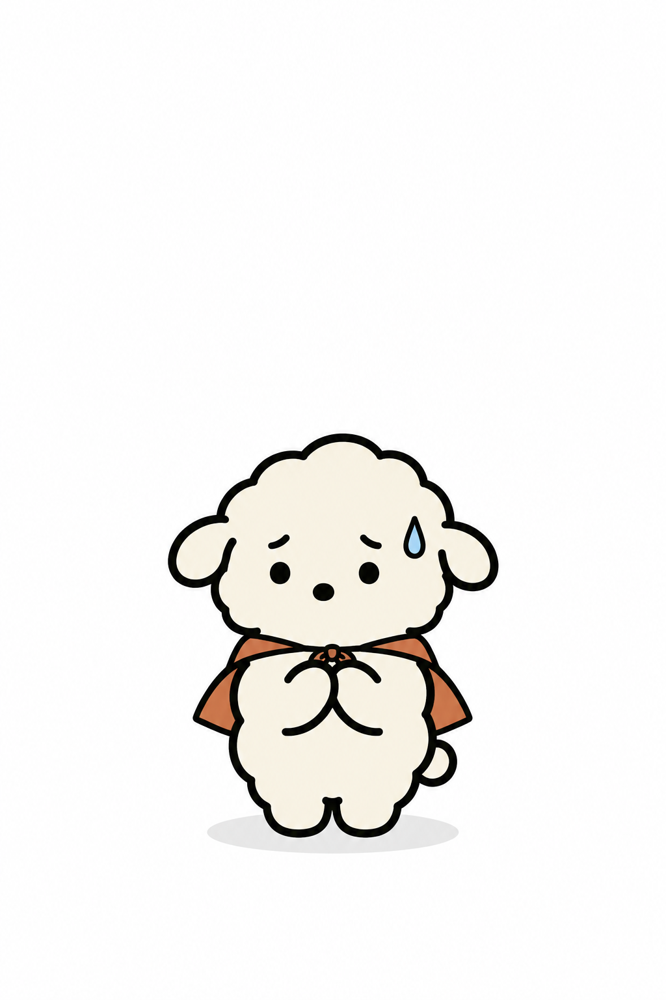

- 작은 힘에도 작은 책임은 따른다 -
No
를
Yes
로
바꿔 말하는
초능력자 특징
1.
할머니집 가면 배탈남
더 먹어
네…
2.
스팸 전화 못 끊음
중요한 전화야?
네 네, 듣고 있어요
3.
오프라인 쇼핑 공포증 있음
잘 어울린다고 했단 말이야
4.
보험 100개 있음
제발 한 번만 다쳐라
5.
재미없어도 좋아요 눌러 줌
재밌지? 재밌지?
재밌어요
♥
당신 곁의 두부를 태그해 주세요
♥